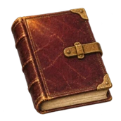
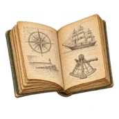
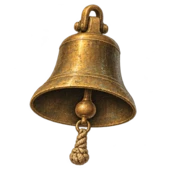
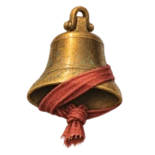
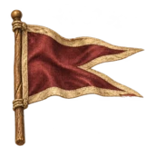
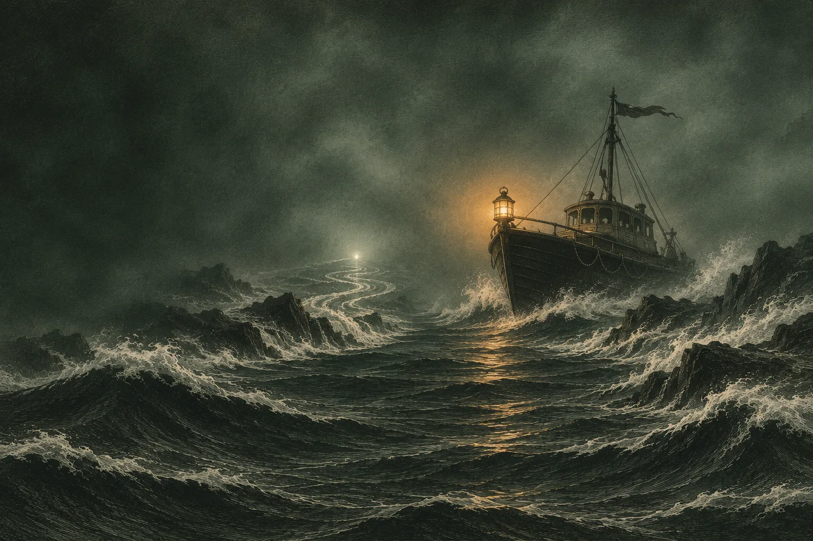
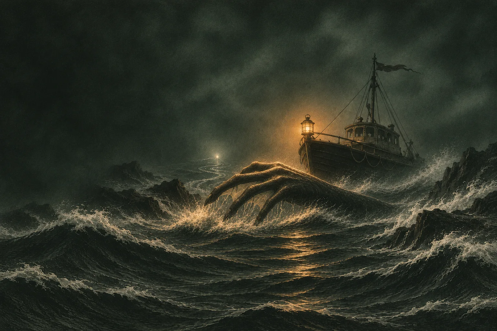
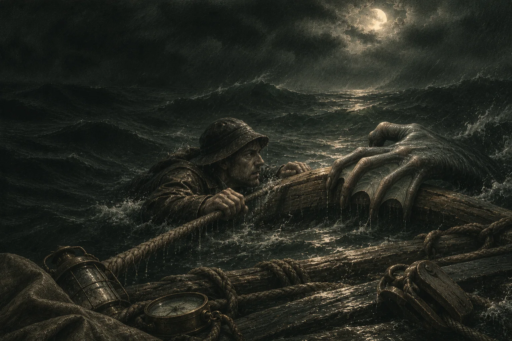
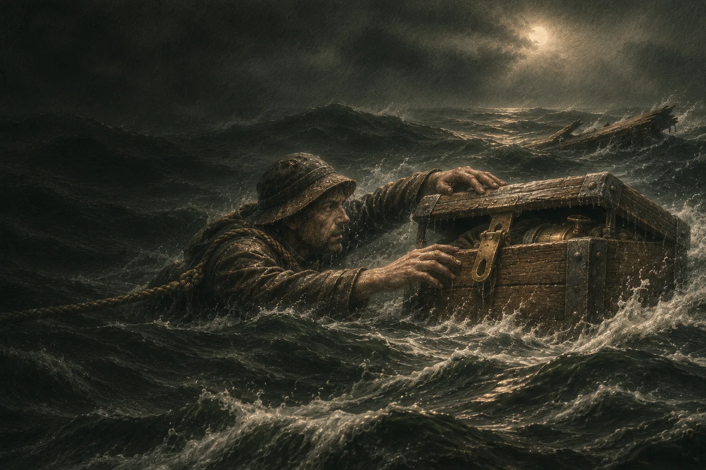

Select your raised signal again to lower it.




Two bots
Nell plays as a bot
All human crew
Drag a card here, or select a card and use this tray.
No entries yet.
Assign one swimmer and play one move per sailor in any order. The swimmer gains 2 cold and recovers 1 ration. Each sailor on the raft sheds 1 cold.
Spend a ration to remove 2 cold from anyone. Each brace blocks 1 hull damage this tide. The voyage ends if any sailor reaches 5 cold or the raft reaches 0 hull after the tide resolves.
Salvage adds two cards to the shared deck. Each sailor holds two. Play a card and draw its replacement. A crew action like Lash the timbers lets you keep both equipment cards. When the draw pile runs out, shuffle the discard pile.
On tide six, the swimmer can play Sounding line to mark a safe channel. On tide seven, follow the marked channel to spare the hull. The swimmer takes 2 cold from exposure. Force a landing to take 4 hull damage before brace, or scout the reef to spare the hull and take 4 cold in all.
During The second wake, a sailor on the raft can ring the Wreck bell. Haul in on the echo to spare the hull and give the swimmer only 1 cold from exposure. The swimmer still recovers 1 ration.
At The bell buoy, brace to feel the chain. Two knocks before the bell mark the true chain. Following it costs 1 extra cold and recovers extra rations. If the bell rings first, following it costs 2 extra cold and recovers 1 ration. The swimmer also takes normal exposure.
When something takes hold of the raft, play Sounding line from the water and Boathook from the raft during the same tide. Then pry it loose without damaging the hull or taking extra cold. Cutting a timber costs hull even with brace. Hauling the swimmer through spares the hull and costs extra cold. Check the route forecast to see how much cold the swimmer takes.
If the creature follows the raft to the reef, ring the Wreck bell from the raft to lure it away. That play adds no brace. Crossing on the echo costs 1 hull even with brace. The swimmer takes normal exposure.
At The drifting locker, haul it aboard to give the swimmer the option to swap one equipment card for the find. The haul costs 1 extra cold. Cut it loose to keep the hand and take normal exposure.
Send each private link to the player who will control that sailor.